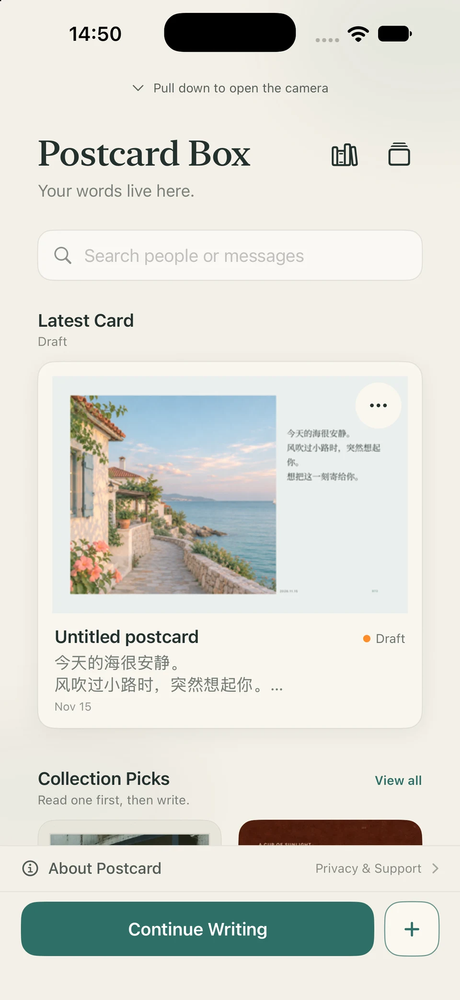
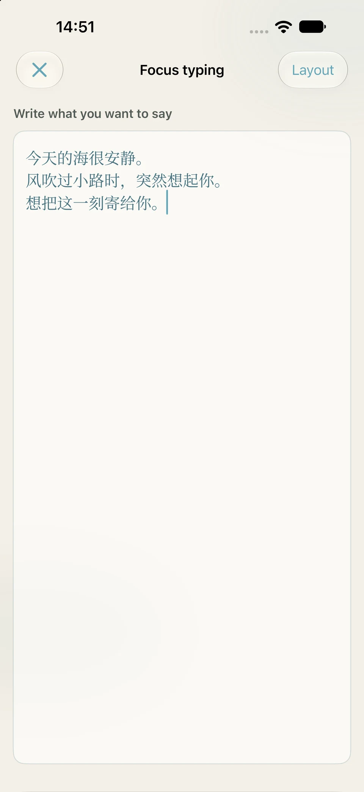
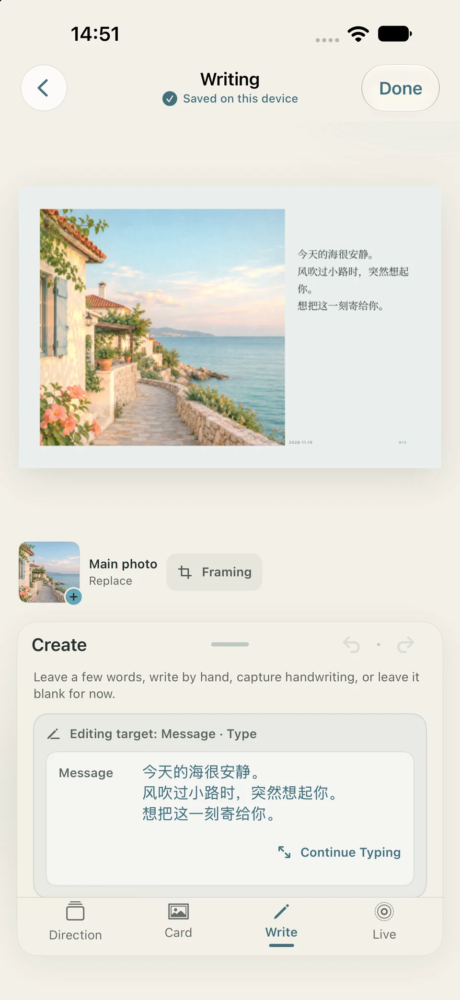
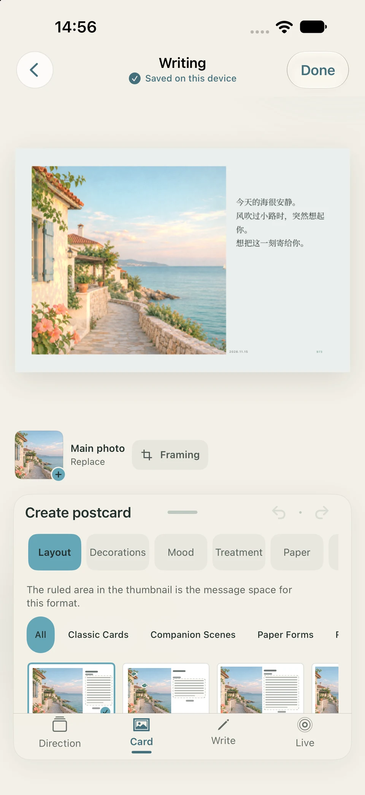
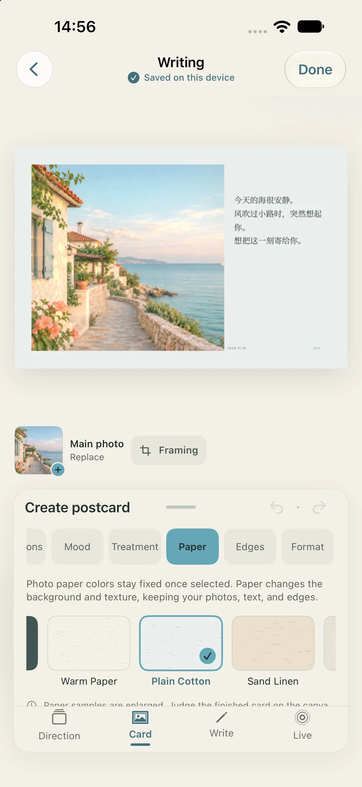
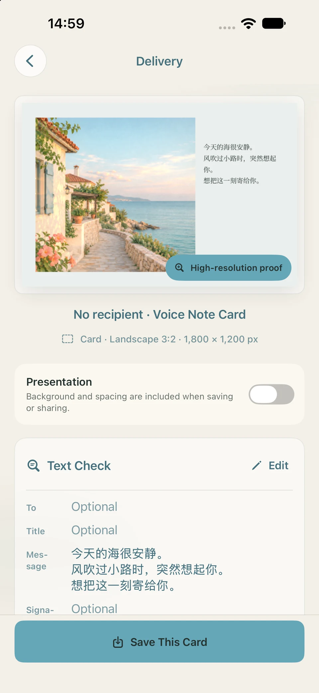
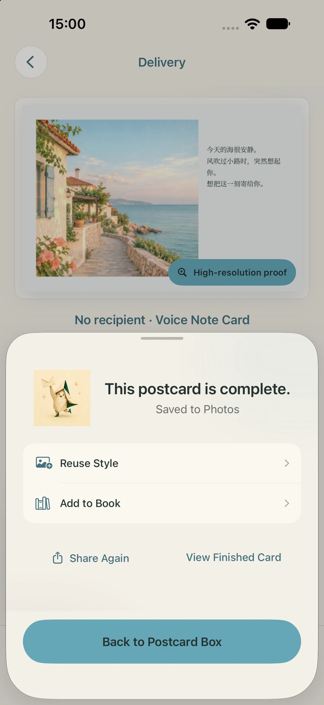

Make your first photo postcard
Start with a photo and a few words, then save the finished card. Every screenshot uses the same example. The red circles mark the next control; you can move between writing and card tools as you refine.

Have Postcard, a photo and a few words ready. Use the example photo or your own.
The sample keeps the same note in Chinese; it means: The sea is quiet today. Walking along the path, I thought of you. I wanted to send you this moment.
今天的海很安静。
风吹过小路时，突然想起你。
想把这一刻寄给你。Download the example photo and try it1.Start with a photo and a person
Open Postcard and start a new card. If Continue Writing is shown, the + button starts a separate card. Choose the main photo in the system picker, or download the seaside example above first.
Check before moving on: Your chosen photo appears in the workspace. Replacing a photo and adjusting its framing are separate actions; the source stays intact.


2.Leave a few words of your own
Open Write → Type and enter your message. Return to the card to check it. Recipient, title and signature are optional. The screenshots keep the same Chinese note throughout; use whichever language feels right for your card.
Check before moving on: Your message appears on the card. Expression Layout lets you adjust the font, size and placement when needed.


Keep your own handwriting
Choose Write in the writing tools to open the freehand canvas. Use your finger, or Apple Pencil on a supported iPad, then tap Done and check the card. The existing note below can be a starting point for your own words.
Practice note: Dear you, I hope you are well. I saw this view today, and thought of you.
To place an existing note image directly on the card, use the image-import option in Capture. For freehand writing, use the note as a reference. After switching sources, check the current card and the selected handwriting frame.
Show the sample note and handwriting entry



3.Give the photo and words a place
Open Card → Layout. This example uses Voice Note Card, with a main image beside a short message. Try another layout if it suits your photo better, and compare the full card.
Check before moving on: Check that the crop keeps the part you care about. Use Framing beside the main photo if needed. Ruled thumbnail areas indicate space for the message.


4.Choose paper that suits the photo
Open Card → Paper. We use Plain Cotton for a quiet background behind the sea, warm walls and dark text. Compare the full card as you try paper colors and textures.
Check before moving on: Paper changes the background and texture. Judge the photo, words and paper together, rather than choosing from the enlarged swatch alone.


5.Check the whole card before saving
Tap Done to open Delivery. Use the High-resolution proof to inspect the crop and text, then read the message check. For a still image, confirm that Photo is selected in Live tools first.
Check before moving on: Check the content and delivery format, then tap Save This Card. If an unlock screen appears, review the current entitlement and Apple confirmation page first.


6.Wait for the saved-to-Photos message
The system may ask whether Postcard can add photos the first time. After allowing it if you choose, wait for Saved to Photos. Open Photos and check the new copy.
Check before moving on: A save completes after the system write succeeds. Check that the picture and words are intact; denied access or a failed write can be checked and retried.



Questions while making your card
Why is there an unlock screen when saving?
This example already has delivery entitlement. Claiming the first free delivery requires a connection. Check the current app explanation and Apple confirmation page; you can return to editing first.
Does ordinary creation upload photos or notes?
Ordinary editing, writing, drafts and recordings are handled on device. Sharing a finished card sends it to the destination you choose.
I tapped Save, but cannot find the card. What next?
Check whether Saved to Photos has appeared. If generation is still running, access was denied, or saving failed, follow the current explanation and retry when ready. Cancellation or failure is not a completed save.
The screenshots show the iPhone interface; control placement may differ on iPad or between app versions. The example uses a synthetic image. An independent annotation layer marks the controls without redrawing the interface. Ordinary editing and review can be tried first; delivery entitlement and prices follow the app and Apple confirmation page.